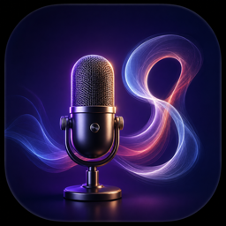

VoiceInk RU beta
Голос → русский текст в любом приложении.
Полностью офлайн. Через клавиатуру.
Сборка0
Версия1.0-pre
МодельGigaAM v2 RNNT (241 МБ)
Качество (RU WER)8.42%
Обновлено2026-05-09T12:26:53Z
Если iOS говорит «не удалось проверить разработчика»:
Settings → General → VPN & Device Management → выбери Egor Lyfar → Trust. Это разовое действие.
Settings → General → VPN & Device Management → выбери Egor Lyfar → Trust. Это разовое действие.
Source: github.com/lyfar/ios-voiceink-ru
Fork of Beingpax/VoiceInk-iOS · GPL-3.0
STT engine: GigaAM (Sber, MIT) via
sherpa-onnx